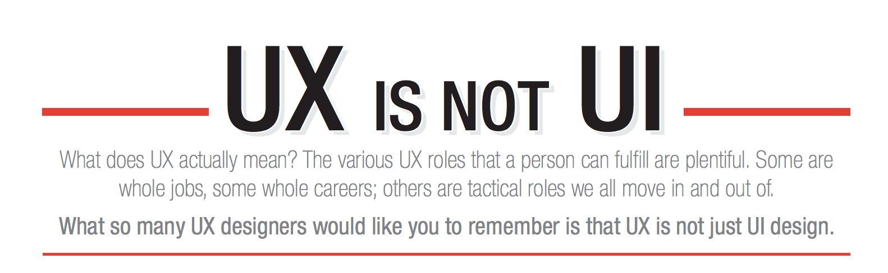
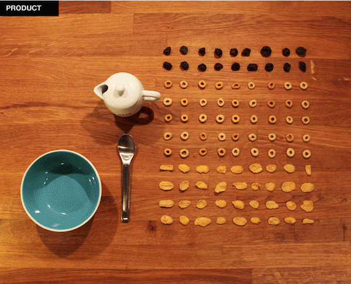
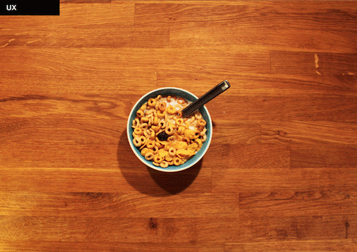
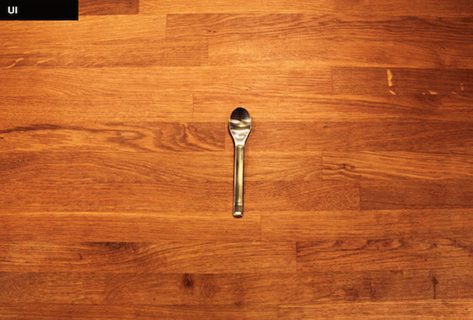

Everybody is different, but I’ve found that my most successful projects started in my sketchbook. Jumping straight to wireframes can help you bust out a project faster, but there are a number of reasons why I think starting with sketching helps (for most projects).
Especially when tackling challenging problems, sketching puts you in the right mindset to get familiar with all the moving parts and flesh out a bunch of concepts quickly. Its also beneficial to show people really low-fidelity designs, because that’s the only time people don’t get stuck up on small details. When you go too high fidelity early, people give you feedback on things you don’t really care about yet, which can be frustrating.
Sketch 3
Sketch 3 has been gaining some major traction in the design community. A lot of companies have switched over to using it as their main software tool. Sketch is essentially a Photoshop/Illustrator competitor that is lighter, but still incredibly powerful, especially for quick wireframes and rapid prototyping. Sketch also comes with a bunch of templates for Material Design and iOS as well. It’s a one-time $49 purchase instead of dealing with Adobe’s monthly subscription.
Invision
Invision is awesome. They’ve been busting out new features left and right this summer. Invision allows you to turn the mockups files (Sketch, Illustrator, Photoshop, PNG/JPG etc), you upload into a fully clickable prototype by linking screens together through hotspots. Its also an excellent platform for getting feedback from coworkers and friends. They can leave comments on specific locations on your mockup and you can respond to them as well, much like the Google Docs commenting feature.
Usertesting.com & Usability Hub
These tools allow you to do user testing remotely and in 10x faster. You can put up tests online, watch people complete tasks, and get actionable feedback within a day. Normally this process will take at least a week if you do it in person. If the company you’re working for has a subscription to these services, they are incredibly powerful. Otherwise, they’re a little pricey to use on your own.
Axure
I use Axure for mapping user flows, site maps and clickable wireframes. The learning curve is high, but if you run through tutorials, everything makes sense pretty quickly. Axure is incredibly powerful because it allows you to test your design really early in the process. You can have dynamic content, click/hover/scroll behaviors, pass variables between screens when using form fields and a lot more. I’d never use this tool for visual design, but it’s a great way to give a demo of your design and show how everything fits together early on in the process.
Google Analytics & Optimizely
Data is a UX Designer & Product Manager’s best friend. Whether its Google Analytics, A/B test results from Optimizely, or data from your company’s database, use it! People respond really well when you use data correctly to advocate for your designs.
Sketch 3 Shortcuts & Plugins That Will Save Your Life
Before looking at any of these plugins, install Sketch Toolbox. It makes installing any Sketch plugin from Github really easy and automatically updates them as the developer releases improvements.
Shortcuts
If you master these shortcuts and incorporate them into your everyday workflow, you’ll be able to zip through projects like its your job (which would be a good thing, especially if it actually is your job).
Inserting Things
R Insert a Rectangle.
O Insert an Oval.
L Insert a Line.
T Insert a Text layer.
Editing Things
⌥ + Drag: Duplicate a layer.
⌥ + Hover: Display distance between other layers.
⇧ + Resize: Preserve aspect ratio.
Other Things
⌃ + L Toggle Layout.
Enter Edit current selected layer.
⌘ + 2Zoom to the selected layers.
⌘ + Click: Select a layer within a group.
⌘ + 3Center the selected layers in the canvas.
EscUnselect all selected layers.
Plugins
No software is perfect. Even with our favorite ones, there are still things that bug us. I think these plugins will help alleviate some of those pains.
Content Generator Sketch Plugin
Instead of creeping your friends out when they randomly find themselves in your prototype, this plugin generates random data like avatars, names, photos, phone numbers, addresses etc.
Sketch Better Paste
One of the things that bothers me most about Sketch is when I paste something. Why the hell does it show up 4 artboards over? This plugin will place things in the center of the screen when you paste into your sketch file.
Sketch Dynamic Button
This plugin allows you to create buttons with fixed margins so you can adjust the size of the rectangle without the text getting messed up.
Sketch Page Switch
While not a huge pain point of Sketch, being able to switch between pages faster is never something I’d complain about.
Sketch Constraints
This plugin essentially makes it possible to have adaptive layouts in Sketch. When you scale your artboards, the content will scale with it. Its a huge life saver, especially if you’re working on multi-platform designs.

UX Is Not UI
I don’t like that I’m writing about this because if you’re a designer, the classic conversation about UI vs UX has become cliche and old. But I’ve found that even people familiar with design use them interchangeably, which is wrong. I’m not trying to be entitled here—I’m sure some developers cringe when I talk to them about their code. But that’s why designers design, engineers engineer, salespeople sell and researchers research. We don’t do each others work and there’s a reason for that, because we’re good at what we do and not so good at what we don’t do.
While they are commonly mentioned together, UX and UI should not be used interchangeably. It turns out there’s actually an entire website dedicated to this idea: http://www.uxisnotui.com/. All of this is extremely subjective because different people and companies define this in a different way, but to me UI is essentially the product of interaction and visual design. UX goes beyond the interface and concentrates on the experience a user has when using your product. It addresses not only whats going on on the screen, but what’s going on behind the screen, and the physical environment or context the product is being used in. Ultimately UX is all about the user, their behavior and needs, and whether the product design is actually adding value.
The difference between UI and UX is well illustrated through Patrick Neeman’s metaphor of cereal. At the end of the day, you use UI to accomplish something bigger. You press a button to order a shirt from Amazon or you press a button for a ride to show up. You use a spoon to eat cereal. The “something bigger” is what UX cares out. UI is simply the means to an end.



Just like you can’t use cereal and a spoon interchangeably, the same goes for user experience and user interface. They aren’t the same. While cereal may be more sexier than a spoon, the idea here is that UX is so much more than just UI Design. If you are talking about the design of an app (the Uber interface), that’s UI. If you’re talking about the whole experience using the app (whether your driver showed up on time, how friendly your driver was, etc), that’s UX. The reason I love UX is because it tackles such a large scope of issues that can often be incredibly challenging to solve.